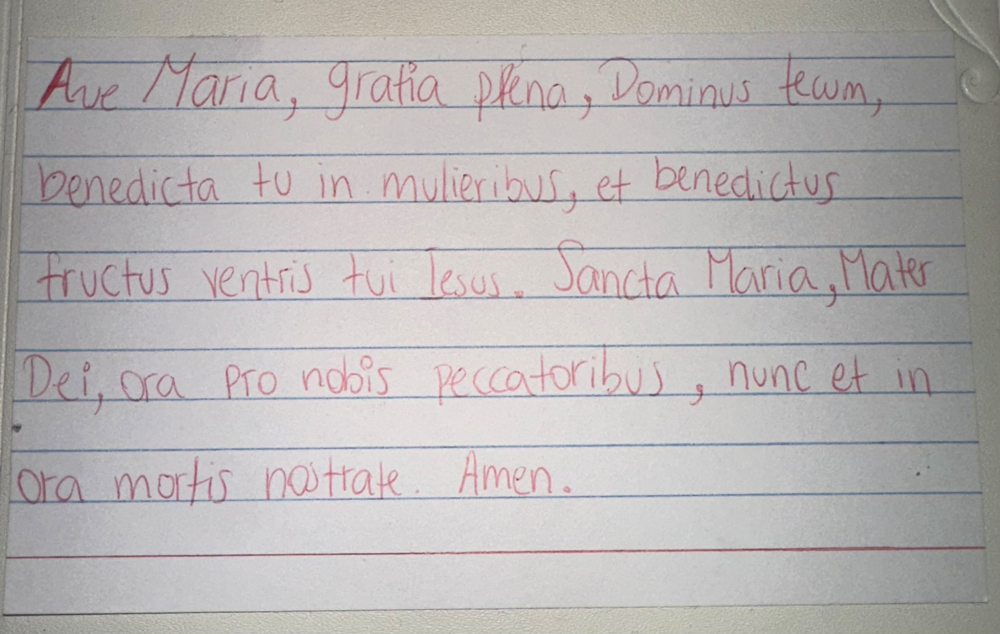
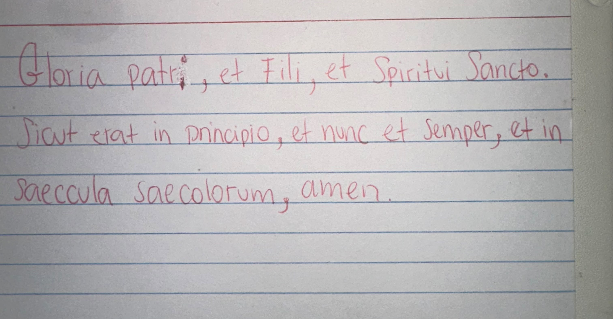
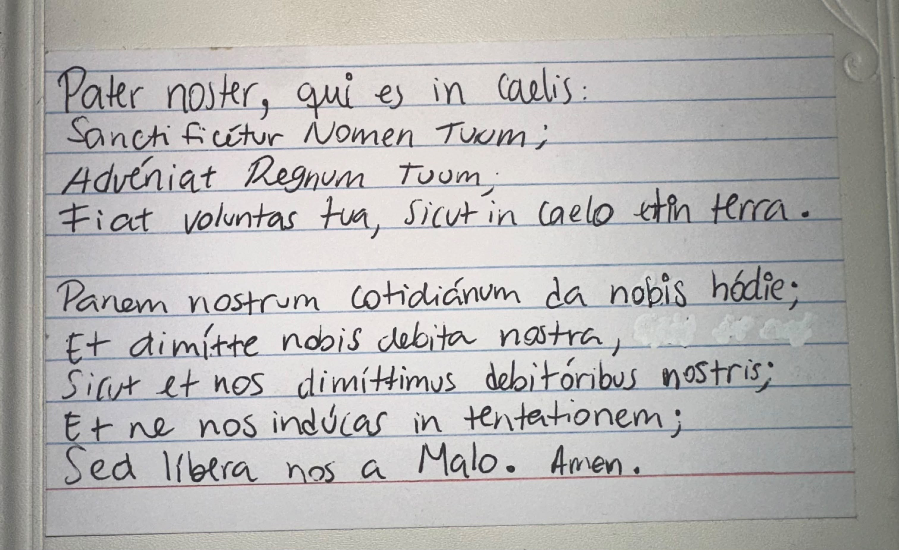

«Yo lo miro y Él me mira.»
San Juan María Vianney — El Cura de Ars
Hola, Sophi.
Si llegaste hasta aquí...
quizá hoy quieres hablar con Dios...
pero simplemente no sabes qué decir.
Y quiero empezar diciéndote algo que a mí también me dio mucha paz descubrir.
No siempre necesitamos encontrar palabras nuevas.
Porque Cristo ya nos regaló las más importantes.
Y la Iglesia lleva casi dos mil años rezándolas.
Toca cada papelito para rezar conmigo.

Reza conmigo

Reza conmigo

Reza conmigo
Hay una anécdota de San Juan María Vianney — el Cura de Ars — en la que de tanto que veía a un campesino entrar al sagrario por horas, un día se le acercó y le preguntó qué hacía tanto ahí.
El campesino respondió:
«Yo lo miro y Él me mira.»
No dijo: «le rezo», ni «le hablo», ni «le pido».
Solo: lo miro.
A veces la oración más profunda no necesita palabras.
Ahora...
deja de leer.
Escoge una de estas tres oraciones.
Y rézala despacio.
Como si fuera la primera vez.
Dios te salve, María, llena eres de gracia; el Señor es contigo. Bendita tú eres entre todas las mujeres, y bendito es el fruto de tu vientre, Jesús. Santa María, Madre de Dios, ruega por nosotros, pecadores, ahora y en la hora de nuestra muerte. Amén.
Gloria al Padre, y al Hijo, y al Espíritu Santo. Como era en el principio, ahora y siempre, por los siglos de los siglos. Amén.
Padre nuestro, que estás en el cielo, santificado sea tu nombre; venga a nosotros tu reino; hágase tu voluntad en la tierra como en el cielo. Danos hoy nuestro pan de cada día; perdona nuestras ofensas, como también nosotros perdonamos a los que nos ofenden; no nos dejes caer en la tentación, y líbranos del mal. Amén.